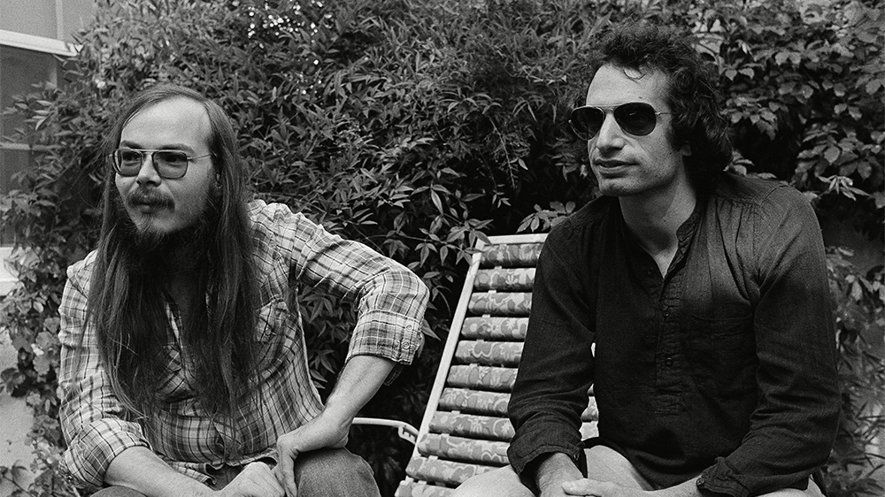
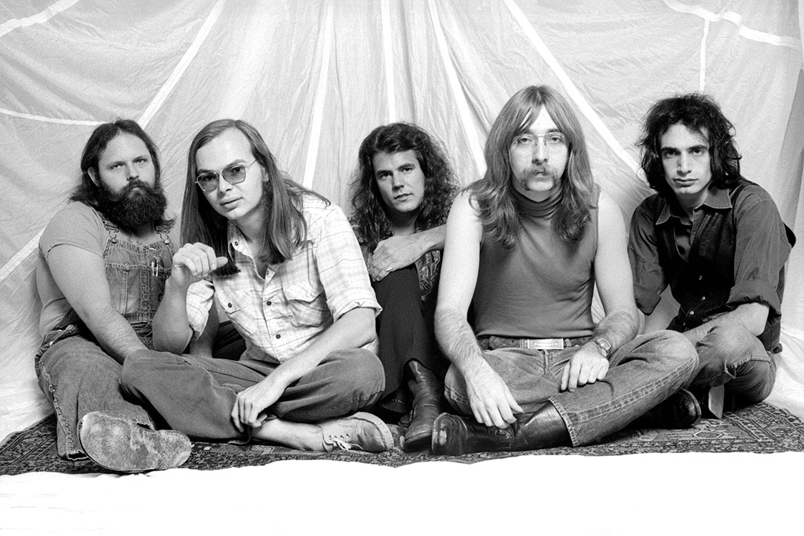
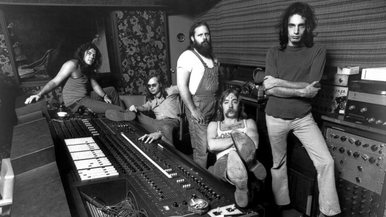
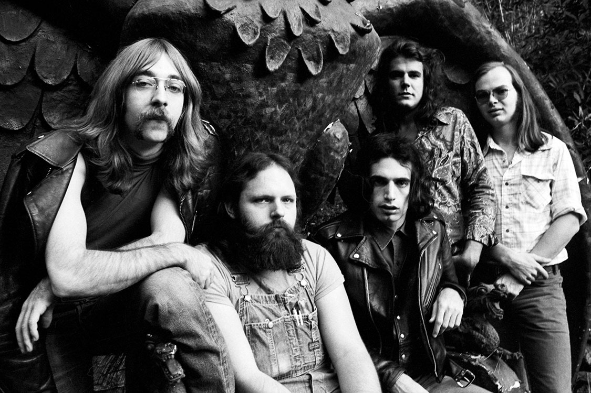

Formada por Donald Fagen e Walter Becker, Steely Dan é uma banda de Jazz - Rock dos anos 70, conhecida pelo perfeccionismo harmônico, melodias sofisticadas e primorosa produção musical. Alguns dos músicos mais renomados do Rock e do Jazz, como Larry Carlton, Michael McDonald e Jeff Porcaro já gravaram com eles. Um de seus principais albuns de estudio, Aja de 1977 posteriormente rendeu até um documentário sobre os bastidores de gravação.